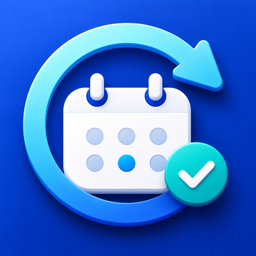

お金 / 期限管理
サブスク管理
サブスクの更新日や解約予定日を登録し、解約忘れを防ぐアプリ。
サブスク名・更新日・解約判断日を登録すると一覧で確認でき、加入中サブスクの合計金額も通貨別にひと目で分かります。登録した日付にはローカル通知でお知らせします。
- 更新日・解約判断日を一覧管理
- 加入中サブスクの合計金額を通貨別に表示
- 登録した日付にローカル通知
- 同期・課金・広告なしのシンプル設計
 Lillip Apps
← アプリ一覧に戻る
Lillip Apps
← アプリ一覧に戻る

お金 / 期限管理
サブスクの更新日や解約予定日を登録し、解約忘れを防ぐアプリ。
サブスク名・更新日・解約判断日を登録すると一覧で確認でき、加入中サブスクの合計金額も通貨別にひと目で分かります。登録した日付にはローカル通知でお知らせします。